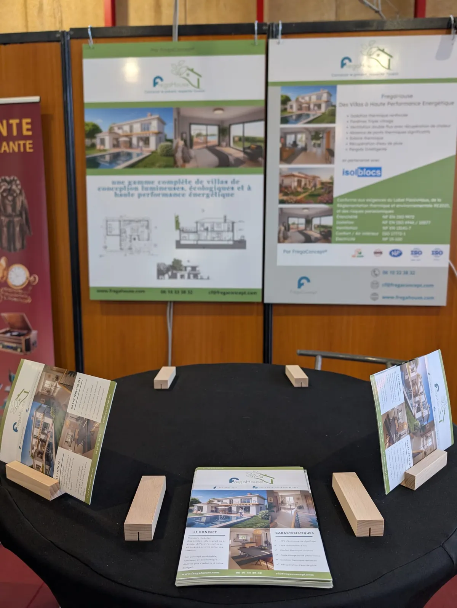
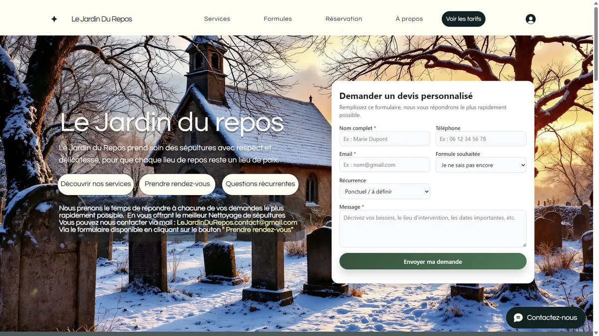

Stratégie de marque
Clarifier ce que vous êtes, pour qui, et pourquoi on devrait vous choisir.
- Positionnement
- Naming & identité
- Charte graphique
- Ton de voix
Je suis Antoine Balesi. J’accompagne les professionnels du positionnement à la mise en ligne, avec des contenus et des automatisations adaptés à leur activité. Marseille, Aix-en-Provence et à distance.
Un livret d’accueil digital pour les hôtes et les conciergeries : une annonce devient un guide que les voyageurs consultent sur leur téléphone.
J’ai conçu la marque, le parcours et la plateforme, avec un développement assisté par IA. Un projet personnel qui réunit les compétences que je mobilise pour vos projets.
Selon là où vous en êtes, on démarre par la marque, par la visibilité, par l'acquisition — ou par l'automatisation.
Clarifier ce que vous êtes, pour qui, et pourquoi on devrait vous choisir.
Dire les bonnes choses, au bon endroit, avec régularité.
Un site pour présenter votre activité, une plateforme pour faire vivre votre service.
Gagner des heures chaque semaine sur ce qui est répétitif.
Trois exemples concrets de ce que je mets en place, avec un gain que l'on mesure ensemble.
Une ligne éditoriale et des modèles de prompts calibrés sur votre ton de voix : vous préparez vos publications bien plus vite, sans perdre votre voix.
Vos formulaires, e-mails et messages entrants sont triés, qualifiés et routés automatiquement. Vous ne traitez plus que ce qui mérite votre attention.
Simulateurs, modèles de devis et séquences de relance automatisés — comme le simulateur tarifaire que j'ai codé pour Le Jardin du Repos.
Vous savez à tout moment où en est le projet, ce qui arrive ensuite et ce que vous recevez à la fin.
On définit le besoin réel, l'objectif et le périmètre. Premier échange gratuit, puis périmètre détaillé dans la proposition.
Direction, contenu, planning. Rien ne démarre avant votre validation écrite.
Je réalise, avec des points d'étape réguliers pour garder le cap.
Passation complète : fichiers sources, accès, documentation. Vous êtes autonome.
Chaque projet est allé plus loin que la maquette : marque créée, site en ligne, premier client — ou bêta en cours pour Shibui.

De l’annonce au livret voyageur : marque, parcours, génération par IA et plateforme avec abonnement.
Découvrir l’étude de cas
Marque immobilière créée de A à Z : naming des gammes Gaïa & Lumina, logo, charte graphique, site Wix et supports salon. Livrée en 30 jours.
Découvrir FregaHouse
Ancienne activité cofondée en 2025, aujourd’hui terminée. Identité, site et simulateur tarifaire conçus pour son lancement.
Découvrir le projetPour une marque, un site, une stratégie de contenu ou une automatisation : oui, et c'est même un avantage — rien ne se perd entre les intervenants. Côté site, je couvre les deux approches : un site codé sur mesure avec l'IA, ou un site Wix que vous modifiez vous-même. Quand un projet demande une compétence que je n'ai pas (tournage, motion design avancé), je le dis au cadrage et je m'entoure du bon profil.
Trois choses mesurables : de la vitesse sur la production de contenu, de l'automatisation sur les tâches répétitives (tri des demandes, relances, devis), et de la constance dans votre communication. Je commence toujours par un audit des tâches automatisables — s'il n'y a rien à gagner, je vous le dis.
Chaque projet étant différent, je travaille sur devis après un premier échange de cadrage — gratuit et sans engagement. Vous recevez ensuite une proposition claire : périmètre, planning, budget. Vous décidez ensuite, sans pression.
Une identité de marque complète demande 3 à 5 semaines. Un site vitrine, 4 à 8 semaines selon l'ampleur. Une automatisation IA se met en place en 1 à 3 semaines. Le planning est arrêté pendant le cadrage, avant toute production.
Oui. Je suis basé entre Marseille et Aix-en-Provence, où je rencontre volontiers les clients quand c'est utile. Mais la majorité des projets se mènent très bien en visio avec des points d'étape réguliers — la géographie n'a jamais bloqué une livraison.
Vous recevez tous les fichiers sources, les accès et une documentation de passation. Vous êtes autonome pour faire vivre le projet. Si vous préférez déléguer le suivi, on met en place un accompagnement mensuel — mais ce n'est jamais imposé.
Un premier échange gratuit, sans engagement, pour comprendre votre besoin et voir concrètement comment je peux vous aider.